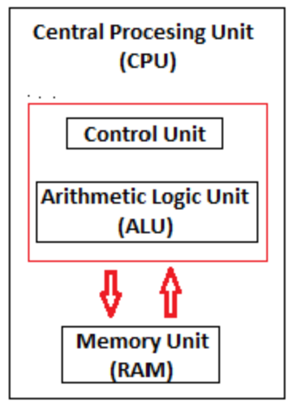
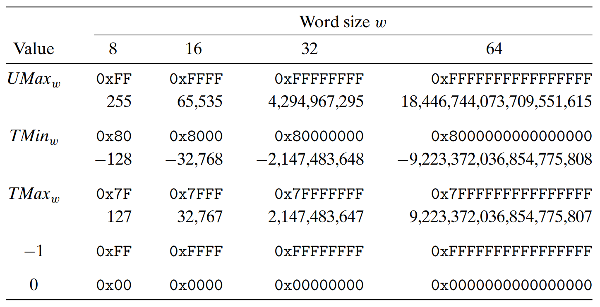
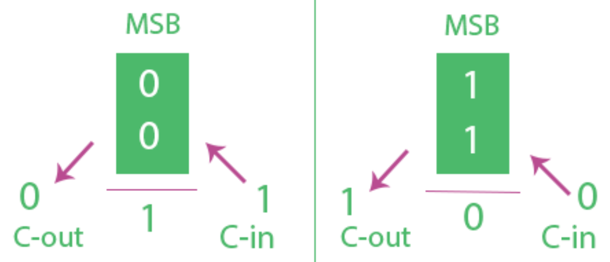
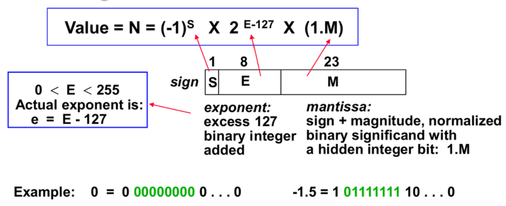
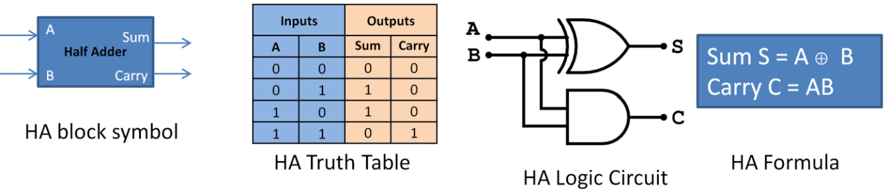
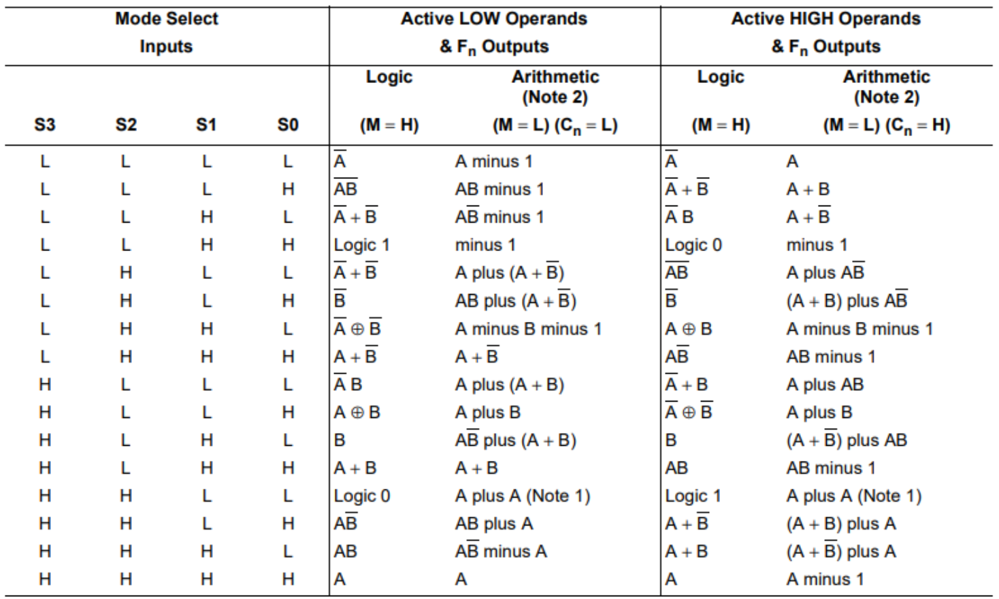

运算器
Introduction of ALU
The ALU is the mathematical brain of a computer. Representing and storing numbers were the basic operation of the computers of earlier times. The real go came when computation, manipulating numbers like adding, multiplying came into the picture. These operations are handled by the computer’s arithmetic logic unit (ALU).
ALU 是计算机的数学大脑。当涉及到数字运算时，真正的起点是计算、加法和乘法等基本操作。这些运算由计算机的算术逻辑单元 (ALU) 负责执行。
The ALU is a digital circuit that provides arithmetic and logic operations. It is the fundamental building block of the central processing unit of a computer. A modern CPU has a very powerful ALU and it is complex in design.
ALU 是一种提供算术和逻辑运算的数字电路。它是计算机中央处理器的基本组成部分。现代 CPU 的 ALU 功能强大，设计复杂。
Most of the operations are performed by one or more ALU’s, which load data from the input register. Registers are a small amount of storage available to the CPU. These registers can be accessed very fast. The control unit tells ALU what operation to perform on the available data. After calculation/manipulation, the ALU stores the output in an output register.
大部分运算由一个或多个 ALU 执行，它们从输入寄存器中加载数据。寄存器是 CPU 可用的少量存储空间。这些寄存器的访问速度非常快。控制单元告诉 ALU 对可用数据执行什么操作。计算/操作完成后，ALU 将输出存储在输出寄存器中。
Arithmetic Logic Unit
算术逻辑单元
ALU performs arithmetic and logical functions. Arithmetic functions include addition, subtraction, multiplication division, and comparisons. Furthermore, ALUs can be used for maintaining timers that help run the computer.
ALU 执行算术和逻辑功能。算术功能包括加法、减法、乘除和比较。
Logical functions mainly include selecting, comparing, and merging the data. A CPU may contain more than one ALU.
逻辑功能主要包括选择、比较和合并数据。一个 CPU 可能包含不止一个 ALU。此外，ALU 还可用于维护计时器，帮助计算机运行。
Different operation as carried out by ALU can be categorized as follows:
ALU 执行的不同操作可分为以下几类：
logical operations : These include operations like AND, OR, NOT, XOR, NOR, NAND, etc.
逻辑运算： 包括 AND、OR、NOT、XOR、NOR、NAND 等运算。
Arithmetic operations : This refers to bit addition and subtraction. Although multiplication and division are sometimes used, these operations are more expensive to make.
算术运算： 指位加法和位减法。虽然有时也使用乘法和除法，但这些运算的成本较高。
Bit-Shifting Operations : This pertains to shifting the positions of the bits by a certain number of places either towards the right or left, which is considered a multiplication or division operations.
位移操作： 这涉及将比特的位置向右或向左移动一定位数，被视为乘法或除法运算。
Logic Gates
逻辑门
Logic gates are devices that implement Boolean functions, i.e. it does a logic operation on one or more bits of input and gives a bit as an output. They are the basic building blocks of any digital system. It is an electronic circuit having one or more inputs and only one output. The relationship between the input and output is based on a certain logic. Hence logic gates are named as AND gate, OR gate, NOT gate, etc.
逻辑门是实现布尔函数的设备，即对一个或多个比特输入进行逻辑运算，并给出一个比特作为输出。它们是任何数字系统的基本构件。它是一个电子电路，有一个或多个输入，只有一个输出。输入和输出之间的关系基于一定的逻辑。因此，逻辑门被命名为 AND 门、OR 门、NOT 门等。
Gate of AND, OR, Inverter, Buffer
Gate of NAND, NOR, XOR, Exclusive-NOR
Boolean Algebra
布尔代数
Switching Algebra is also known as Boolean Algebra. It is used to analyze digital gates and circuits It is logical to perform a mathematical operation on binary numbers i.e., on ’0’ and ’1’. Boolean Algebra contains basic operators like AND, OR, and NOT, etc. Operations are represented by ’.’ for AND , ’+’ for OR.
开关代数又称布尔代数。它是对二进制数，即 "0 "和 "1 "进行数学运算的逻辑。布尔代数包含 AND、OR 和 NOT 等基本运算符。AND 运算用". "表示，OR 运算用 "+"表示。
Practice
To evaluate boolean operations on bit vectors.
对位向量进行布尔运算。
Annulment law 囿元律
A.0 = 0
A + 1 = 1
Identity law 零一律
A.1 = A
A + 0 = A
Double negation law 双重否定律
((A) ′ ) ′ = A
Idempotent law 幂等律
A + A = A
A.A = A
Complement law 互补律
A + A ′ = 1
A.A′ = 0
Commutative law 交换律
A + B = B + A
A.B = B.A
Associative law 结合律
A + (B + C) = (A + B) + C
A.(B.C) = (A.B).C
Distributive law 分配律
A.(B + C) = (A.B) + (A.C)
(A + B)(A + C) = A + BC
Absorption law 吸收律
A.(A + B) = A
A + AB = A
A + A ′B = A + B
A(A ′ + B) = AB
De Morgan law 德·摩根律
(A.B) ′ = A ′ + B ′
(A + B) ′ = A ′ .B′
Practice
AB + A′B + BC = ?
AB + A′B = ?
Shift Operations
移位操作
Logical. A logical right shift fills the left end with k zeros.
逻辑移位。逻辑右移在左端填充 k 个 0。
\([0,\ldots,0,x_{w-1},x_{w-2},\ldots x_k]\)
Arithmetic. An arithmetic right shift fills the left end with k repetitions of the most significant bit.
算术移位。算术右移会在左端填充 k 个重复的最有效位。
\([x_{w-1},\ldots,x_{w-1},x_{w-1},x_{w-2},\ldots x_k]\)
Whether it’s a logical left shift or an arithmetic left shift, k zeros are filled at the right end.
无论逻辑左移还是算术左移，都会在右端填充 k 个 0。
As examples, the following table shows the effect of applying the different shift operations to two different values of an 8-bit argument x:
下表举例说明了对 8 位参数 x 的两个不同值进行不同移位操作的效果：
Practice
Each of the answers should be 8 binary digits or 2 hexadecimal digits.
每个答案应为 8 个二进制数字或 2 个十六进制数字。
Representing Information
表示信息
We consider the three most important representations of numbers.
我们考虑三种最重要的数字表示法。
Unsigned encodings
无符号编码
Unsigned encodings are based on traditional binary notation, representing numbers greater than or equal to 0.
无符号编码基于传统的二进制符号，表示大于或等于 0 的数字。
Two’s-complement encodings
补码编码
Two’s-complement encodings are the most common way to represent signed integers, that is, numbers that may be either positive or negative.
补码是表示有符号整数的最常用方法，即可以是正数也可以是负数的数字。
Floating-point encoding
浮点编码
Floating-point encodings are a base-2 version of scientific notation for representing real numbers.
浮点数编码是基于2进制版本的表示实数的科学记数法。
Computers implement arithmetic operations, such as addition and multiplication, with these different representations, similar to the corresponding operations on integers and real numbers.
计算机通过这些不同的表示方法来执行算术运算，如加法和乘法，类似于对整数和实数的相应运算。
Generally speaking, single bits are used only for storing Boolean values (true or false). In most programming languages, true equates to one, while false equates to zero. The smallest unit of data that can be addressed in computer memory is the byte.
一般来说，单比特仅用于存储布尔值（真或假）。在大多数编程语言中，"真 "等于 "1"，而 "假 "等于 "0"。计算机内存中可寻址的最小数据单位是字节。
Number System
数字系统
Electronic and Digital systems may use a variety of different number systems, (e.g. Decimal, Hexadecimal, Octal, Binary).
电子和数字系统可使用各种不同的数字系统（如十进制、十六进制、八进制、二进制）。
\((N)_b=d_{n-1}d_{n-2}...d_1d_0.d_{-1}d_{-2}...d_{-m}\)
In the above, \(dn_{−1}\) to \(d_0\) is the integer part, then follows a radix point, and then \(d_{−1}\) to \(d_{−m}\) is the fractional part.
在上面，\(dn_{−1}\)到\(d_0\)是整数部分，小数点后， \(d_{−1}\)到\(d_{−m}\)是小数部分。
\(d_{n-1} = Most \quad Significant \quad Bit \quad (MSB \quad 最高有效位)\)
\(d_{-m} = Least \quad Significant \quad Bit \quad (LSB \quad 最低有效位)\)
A common task in working with machine-level programs is to manually convert between decimal, binary, and hexadecimal representations of bit patterns.
处理机器级程序的一项常见任务是在十进制、二进制和十六进制比特模式之间进行手动转换。
Decimal to Binary
\( (10.25)_{10}=(1010.01)_2 \)
convert decimal to binary (python)
def decToBinary(n):
binaryNum = [0] * n
i = 0
while (n > 0):
binaryNum[i] = n % 2
n = int(n / 2)
i += 1
for j in range(i - 1, -1, -1):
print(binaryNum[j], end = ' ' )
n = 17
decToBinary(n)
Binary to Decimal
\( (1010.01)_2 \)
\( 1\times2^{3}+0\times2^{2}+1\times2^{1}+0\times2^{\theta}+0\times2^{-1}+1\times2^{-2}=10.25 \)
convert binary to decimal (python)
def binaryToDecimal(n):
num = n
dec_value = 0
# Initializing base value to 1, i.e 2 ^ 0
base = 1
temp = num
while(temp):
last_digit = temp % 10
temp = int(temp / 10)
dec_value += last_digit * base
base = base * 2
return dec_value
num = 10101001
print(binaryToDecimal(num))
Hexadecimal to Binary
To convert from Hexadecimal to Binary, write the 4-bit binary equivalent of hexadecimal.
要从十六进制转换成二进制，写出相当于十六进制的 4 位二进制。
\( (3\mathrm{A})_{16}=(00111010)_2 \)
Binary to Hexadecimal
To convert from Binary to Hexadecimal, start grouping the bits in groups of 4 from the right-end and write the equivalent hexadecimal for the 4-bit binary. Add extra 0’s on the left to adjust the groups.
要从二进制转换为十六进制，从右端开始以 4 位为一组分组，并写出相当于 4 位二进制的十六进制。在左侧添加额外的 0 以调整分组。
\( (1111011011)_2=(3DB)_{16} \)
Practice
To give the decimal, binary, and hexadecimal values of different byte patterns (unsigned number):
给出不同字节模式（无符号数）的十进制、二进制和十六进制值：
Unsigned Encodings
无符号编码
We can express this interpretation as a function \(B2U_w\) (for “binary to unsigned,” length \(w\)). Definition of unsigned encoding:
我们可以用函数 \(B2U_w\) （表示 "二进制到无符号"，长度 \(w\)）来表示这种解释。无符号编码的定义：
$$ \text{For vector }\vec{x}=[x_{w-1},x_{w-2},\ldots,x_0] $$
$$ B2U_w(\vec{x})\doteq\sum_{i=0}^{w-1}x_i2^i $$
$$ \textit{the range from 0 to 2}^w-1 $$
The function \(B2U_w\) maps strings of zeros and ones of length w to nonnegative integers. As examples,
函数 \(B2U_w\) 将长度为 \(w\) 的 0 和 1 字符串映射为非负整数。举例说明，
Unsigned number examples for \(w = 4\). When bit i in the binary representation has value 1, it contributes \(2^i\) to the value.
\(w = 4\) 的无符号数为例。当二进制表示法中的第 i 位值为 1 时，它的贡献值为 \(2^i\)。
Sign Magnitude
原码
Sign magnitude is a very simple representation of negative numbers. In sign magnitude the first bit is dedicated to represent the sign and hence it is called sign bit.
原码是负数的一种非常简单的表示方法。在原码中，第一位专门用来表示符号，因此称为符号位。
Sign bit '1' represents negative sign.
符号位 "1" 代表负号。
Sign bit '0' represents positive sign.
符号位 "0" 代表正号。
In sign magnitude representation of a n-bit number, the first bit will represent sign and rest n-1 bits represent magnitude of number.
在 n 位原码表示法中，第一位代表符号，其余 n-1 位代表数字的大小。
The most significant bit is a sign bit that determines whether the remaining bits should be given negative or positive weight:
最高有效位是一个符号位，决定其余位的权重是负还是正：
$$ B2S_w(\vec{x})\doteq(-1)^{x_{w-1}}\cdot\left(\sum_{i=0}^{w-2}x_i2^i\right) $$
Range of number represented by sign magnitude method is \( -(2^{n-1} - 1) \quad to \quad +(2^{n-1} - 1) \) (for n bit number) But there is one problem in sign magnitude and that is we have two representations of 0: \( +0 = 000000 \quad -0 = 100000 \)
用原码表示数的范围是 \( -(2^{n-1} - 1) \quad 到 \quad +(2^{n-1} - 1) \) （对于 n 位数），但是原码表示法有一个问题，那就是有两个 0 的表示法： \( +0 = 000000 \quad -0 = 100000 \)
Two’s Complement
补码
Two’s Complement, we express this interpretation as a function \( B2T_w \) (for “binary to two’s complement” length w). Definition of two’s complement encoding:
在补码中，我们用函数 \( B2T_w \)（二进制表示的w位补码）来代表补码。补码的定义：
$$ \text{For vector }\vec{x}=[x_{w-1},x_{w-2},\ldots,x_0] $$
$$ B2T_w(\vec{x})\doteq-x_{w-1}2^{w-1}+\sum_{i=0}^{w-2}x_i2^i $$
When the sign bit \( (x_{w-1}) \) is set to 1, the represented value is negative, and when set to 0, the value is nonnegative. As examples,
当符号位 \( (x_{w-1}) \) 设置为 1 时，表示值为负，设置为 0 时，表示值为正。举例如下：
Two’s complement number examples for \( w = 4 \). Bit 3 serves as a sign bit; when set to 1, it contributes \( -2^3 = -8 \) to the value.
\( w = 4 \) 的补码表示为例。第 3 位作为符号位；置 1 时，它的值为 \( -2^3 = -8 \)。
As a w-bit two’s complement number, the least representable value is given by bit vector [10 ... 0], having integer value:
作为一个 w 位补码数，最小可表示值由具有整数值的位向量 [10 ... 0] 给出，其值为：
$$ TMin_w=-2^{w-1} $$
The greatest value is given by bit vector [01 ... 1], having integer value:
最大值由位向量 [01 ... 1] 给出，其值为：
$$ TMax_w=2^{w-1}-1 $$
Using the 4-bit case as an example.
4位补码的例子
$$ TMin_4=B2T_4([1000])=-8 $$
$$ TMax_4=B2T_4([0111])=7 $$
Two’s complement representations of word size w
字长为 w 的补码表示
Typical ranges for C data types for 64-bit programs
C语言64位程序数据类型的典型范围
Practice

One’s complement
反码
One’s complement. This is the same as two’s complement, except that the most significant bit has weight \( -(2^{w-1}-1) \) rather than \( -2^{w-1} \) :
反码表示与补码类似，只是最有效位的权重为 \( -(2^{w-1}-1) \)而不是 \( -2^{w-1} \)
$$ B2O_w(\vec{x})\doteq-x_{w-1}(2^{w-1}-1)+\sum_{i=0}^{w-2}x_i2^i $$
the range of values that can be represented using 8 bits is -127 to +127.
用 8 位可以表示的反码数值范围是 -127 到 +127。
The 8-bit binary representation of zero using one’s complement can take one of two forms. \( 00000000 (+0) \quad 11111111 (-0) \)
使用8位反码对零进行二进制表示有两种形式。\( 00000000 (+0) \quad 11111111 (-0) \)
The main difference between 1’ s complement and 2’ s complement is that 1’ s complement has two representations of 0 (zero) - 00000000, which is positive zero (+0), and 11111111, which is negative zero (-0); whereas in 2’ s complement, there is only one representation for zero - 00000000 (0).
反码与补码的主要区别在于反码有两种零的表示，00000000，即正零（+0），以及 11111111，即负零（-0），而在补码中，零只有一种表示形式00000000，即正零(+0)。
Unsigned Addition
无符号数加法
For x and y such that \( 0 ≤ x, y < 2^w \) :
假设x和y的范围是 \( 0 ≤ x, y < 2^w \) ：
$$ \left.x+_w^\mathrm{u}y=\left\{\begin{array}{ll}x+y,&x+y<2^w\quad\text{Normal}\\x+y-2^w,&2^w\leq x+y<2^{w+1}\quad\text{Overflow}\end{array}\right.\right. $$
The normal case preserves the value of x + y, while the overflow case has the effect of decrementing this sum by \( 2^w \).
正常情况下，x + y 的值保持不变，而溢出情况下的情况下，这个和会减去 \( 2^w \).
An arithmetic operation is said to overflow when the full integer result cannot fit within the word size limits of the data type. Overflow occurs when the two operands sum to \( 2^w \) or more.
溢出是指算术运算结果超出数据类型的大小限制。当两个操作数之和达到或超过 \( 2^w \) 时，就会出现溢出。
For example, the unsigned addition function for word size w = 4. The sum is computed modulo \( 2^4 = 16 \). When x + y < 16, there is no overflow.
例如，字大小为 w = 4 的无符号加法运算。和以 \( 2^4 = 16 \) 模计算，当 x + y < 16 时，不会出现溢出。
Detecting overflow of unsigned addition
检测无符号数加法的溢出
For x and y in the range \( 0\leq x,y\leq UMax_w, s\doteq x+_w^uy \). Then the computation of s overflowed if and only if s < x (or equivalently, s < y).
假设x和y的取值范围为 \( 0\leq x,y\leq UMax_w, s\doteq x+_w^uy \)。运算结果s的溢出条件是有且仅有s < x （或者, s < y）。
Two’s Complement Addition
补码加法
For integer values x and y in the range: \( -2^{w-1}\leq x,y\leq2^{w-1}-1 \)
假设x和y的取值范围为：\( -2^{w-1}\leq x,y\leq2^{w-1}-1 \)
$$ x+_w^\mathrm{t}y=\begin{cases}x+y-2^w,&2^{w-1}\le x+y\quad\text{Positive overflow}\\x+y,&-2^{w-1}\le x+y<2^{w-1}\quad\text{Normal}\\x+y+2^w,&x+y<-2^{w-1}\quad\text{Negative overflow}\end{cases} $$
Relation between integer and two's-complement addition. When x + y is less than \( -2^{w-1} \), there is a negative overflow. When it is greater than or equal to \( 2^{w-1} \), there is a positive verflow.
补码整数加法的关系。当x + y小于\( -2^{w-1} \)时，为负溢出。当大于等于\( 2^{w-1} \)时，为正溢流。

Detecting overflow in two’s-complement addition
补码加法中的溢出检测
For x and y in the range \( TMin_w\leq x,y\leq TMax_w \), let \( s\doteq x+_w^ty \). Then the computation of s has had positive overflow if and only if \( x>0\text{ and }y>0\text{ but }s\leq0 \). The computation of s has had negative overflow if and only if \( x<0\text{ and }y<0\text{ but }s\geq0 \).
假设x和y的取值范围为 \( TMin_w\leq x,y\leq TMax_w, s\doteq x+_w^ty \)。运算结果s的正溢出条件是有且仅有\( x>0\text{ 并且 }y>0\text{ 但是 }s\leq0 \)。运算结果s的负溢出条件是有且仅有\( x<0\text{ 并且 }y<0\text{ 但是 }s\geq0 \)。
Overflow can be detected using 2 Bit Comparator just by checking Carry-in(C-in) and Carry-Out(C-out) from MSB's (Most Significant Bit).
通过检查MSB(最高有效位)的进位输入(C-in)和进位输出(C-out)，可以使用2位比较器检测溢出。
In left Figure the MSB of two numbers are 0 which means they are positive. Here if C-in is 1 we get answer's MSB as 1 means answer is negative (Overflow) and C-out as 0. \( C-in \neq C-out \) hence overflow.
在左图中，两个数字的MSB为0，这意味着它们是正的。如果这两个数相加的结果C-in为1，即符号位MSB为1，表示两个正数相加结果为负(正溢出)，C-out为0。结论\( C-in \neq C-out \) 则运算结果溢出。
In right Figure the MSB of two numbers are 1 which means they are negative. Here if C-in is 0 we get answer MSB as 0 means answer is positive (Overflow) and C-out as 1. \( C-in \neq C-out \) hence overflow.
在右图中，两个数字的MSB为1，这意味着它们是负的。如果这两个数相加的结果C-in为0，即符号位MSB为0，表示两个负数相加结果为正(负溢出)，C-out为1。结论\( C-in \neq C-out \) 则运算结果溢出。
XOR Gate can be used to detect overflow.
异或门可用来检测溢出。
Using two sign bits to detect overflow.
使用双符号位检测溢出。
Practice
Two’s Complement Negation
补码求反（减法）
For x in the range \( TMin_w\leq x\leq TMax_w \), its 2's complement negation \( -_w^tx \) is given by the formula:
假设x的取值范围为 \( TMin_w\leq x\leq TMax_w \)，其补码求反\( -_w^tx \)公式为：
$$ \left.-_w^\mathrm{t}x=\left\{\begin{array}{ll}TMin_w,&x=TMin_w\\-x,&x>TMin_w\end{array}\right.\right. $$
That is, for w-bit 2's complement addition, \( TMin_w \) is its own additive inverse, while any other value x has -x as its additive inverse.
可见，对于w位的补码加法，\( TMin_w \) 的求反结果是其本身，而任何其他值x的求反结果是-x。
A simple way to perform 2's-complement negation of a number x is based on splitting the bit vector into two parts. Let k be the position of the rightmost 1, so the bit-level representation of x has the form \( [x_{w-1},x_{w-2},...,x_{k+1},1,0,...0] \). The negation is then written in binary form as \( [\thicksim x_{w-1},\thicksim x_{w-2},...,\thicksim x_{k+1},1,0,...0] \). That is, we complement each bit to the left of bit position k.
对数字x执行补码求反的一种简单方法是将位向量分成两部分，设k为最右边1的位置，因此x二进制向量可表示为 \( [x_{w-1},x_{w-2},...,x_{k+1},1,0,...0] \)，其补码求反二进制向量可表示为 \( [\thicksim x_{w-1},\thicksim x_{w-2},...,\thicksim x_{k+1},1,0,...0] \)。也就是说，将二进制向量k位左边的每一位求反。
The circuit of 2’s complement negation
补码求反电路
Practice
Multiplication
乘法
In the multiplication, partial products are generated for each digit in the multiplier. Then all these partial products are added to produce the final product value.
在乘法运算中，乘数中的每个数字都会产生部分乘积。然后将所有这些部分乘积相加，产生最终乘积值。
In the partial product, when the multiplier bit zero, the partial product is zero, and when the multiplier bit is 1, the resulted partial product is the multiplicand.
在部分积中，当乘法位为零时，部分积为零，当乘法位为1时，得到的部分积为乘数。
It is to be observed that when we multiplied two 4-bit binary numbers, the product obtained is 8-bits. Hence the product register (P) is double the size of the Multiplicand (M) and Multiplier (Q) register.
可以看到，当两个4位二进制数相乘时，得到的乘积是8位。因此，乘积寄存器(P)是被乘数(M)和乘数(Q)寄存器大小的两倍。
Binary multiplication was much simpler than decimal multiplication. Essentially this is done by a sequence of shifting and addition of multiplicand when the multiplier consists only of 1's and O's.
二进制乘法比十进制乘法简单得多。本质上，这是通过乘数的移位和加法序列来完成的，因为乘数只有1和0。
Multiplication (Booth's Algorithm)
布斯算法
Booth observed that multiplication can also be done with mixed additions and subtractions, instead of only additions. And it deals with signed multiplication as well.
布斯观察到，乘法也可以用加法和减法来做，而不仅仅是加法。该算法可以很好处理有符号乘法。
The values of the current bit (\( Q_0 \)) and the outgoing bit (\( Q_e \)) of the multiplier decide the operation to be performed.
乘数寄存器的当前位(\( Q_0 \))和移出位(\( Q_e \))的值决定要执行的操作。
Example (Booth's Algorithm): \( -12\times-11=132 \)
Multiplication (Parallel Binary Multiplier)
并行二进制乘法器
Each partial product consists of four product terms and these are shifted to the left relative to the previous partial product.
每个部分积由四个乘积项组成，它们相对于前一个部分积向左移动。
The logic circuit for the 4 × 4 binary multiplication can be implemented by using three binary full adders along with AND gates.
4 × 4二进制乘法的逻辑电路可以通过使用3个二进制全加法器和与门来实现。
Parallel Binary Multiplier Circuit
并行二进制乘法电路
Division
除法
The objective of a division is to divide the Dividend by the Divisor and obtain the Quotient and Remainder. In a simple approach, Division is a successive subtraction.
除法的目的是将被除数除以除数，得到商和余数。简单来说，除法是一个连续的减法。
Restoring Division
恢复余数除法
Restoring division is a method that is called trial subtraction. If the result of trial subtraction is positive, then the quotient is marked '1' and also the subtraction becomes the desired step.
恢复余数除法是一种称为试减法的方法。如果尝试减去除数的结果是正的，那么商被记为“1”，并且减法是正确的步骤。
However, if the trial subtraction result is negative then this becomes an undesired step; and hence the step is reverted or restored by adding the divisor, then the quotient is marked '0'. For this reason, this method of division algorithm is called Restoring Division method.
然而，如果尝试减去除数的结果是负的，那么该步骤是错误的（不该做减法），因此，通过加除数将步骤还原，将商标记为0，这也是恢复余数除法名字的由来。
Non-Restoring Division
不恢复余数除法
In the non-restoring algorithm, on finding A-B to be negative,B is not added right then. Instead, it proceeds with shift left (making it 2(A-B) ). In the next time around the loop B is added (making it 2A-2B+B=2A-B). The correction is applied at the stage of the final remainder.
在不恢复余数除法中，当发现A-B为负时，不立即加B。相反，它继续向左移位(使其为2(A-B))。在下一次循环中加B(使其成为2A-2B+B=2A-B)。最终余数通过加减交替的步骤被校正。
The circuit of non-restoring division
Floating-Point Representation
浮点数表示
The computer must be able to represent the numbers and can be operated on them in such a way that the position of the binary point is variable and is automatically adjusted as computation proceeds.
计算机必须能够表示和操作浮点数，即二进制数的小数点的位置是可变的，并随着计算的进行而自动调整。
The IEEE floating-point standard represents a number in a form \( V=(-1)^s\times M\times2^E \).
IEEE浮点数标准表示的数字形式为 \( V=(-1)^s\times M\times2^E \)。
The sign s determines whether the number is negative (s = 1) or positive (s = 0).
符号s决定这个数是负数(s = 1)，还是正数(s = 0)。
The significand M is a fractional binary number.
有效数字（尾数）M是一个二进制小数。
The exponent E weights the value by a (possibly negative) power of 2.
指数E表示2的指数(可能是负的)，进行加权求值。
\( V=(-1)^s\times M\times2^E \)
The 32 bits (single-precision) are divided into three fields.
32位单精度浮点数的表示可以分为3部分。
Sign = 1 bit.
Exponent = 8 bits ( E = e + 127 ).
Mantissa = 23 bits (1.M).
Example: \( 111101.100011(1.1110110011\times2^5) \)
Sign = 0 (positive)
Mantissa = 11101100110000000000000 (23 bits)
Exponent = 132 (5 + 127)
The 64 bits (double-precision) are divided into three fields.
64位双精度浮点数的表示可以分为3部分。
Sign = 1 bit.
Exponent = 11 bits ( E = e + 1023 ).
Mantissa = 52 bits (1.M).
Example of 32 bit floating point (Single Precision)
$$20.59375=10100.10011$$
$$10100.10011=1.010010011\times2^4$$
$$S=0$$
$$E=131(4+127\quad10000011)$$
$$M=010010011$$
$$010000011010010011000000000000000$$
$$0x41A4C000$$
Practice:\( \quad \frac{13}{64} \quad ? \)
Floating-point operations
浮点运算
FP arithmetic operations are not only more complicated than the fixed-point operations but also require special hardware and take more execution time.
浮点算术运算不仅比定点运算更复杂，而且需要特殊的硬件和更长的执行时间。
Algorithm for FP Addition/Subtraction
浮点数的加减算法
Let X and Y be the FP numbers involved in addition/subtraction, where \( Y_e>X_e. \)
设X和Y为加减法中涉及的FP数，其中\( Y_e>X_e \)。
FP Addition/Subtraction (Example)
浮点加减举例
Add 0.5 to -0.4375 using the IEEE 754 floating point.
使用IEEE 754浮点数标准，计算0.5加0.4375。

Practice
\( 3.75(0x40700000)+5.125(0x40a40000)=8.875(0x410e0000) \)
Adder in Digital Logic
数字逻辑中的加法器
There are two types of adders namely Half adder and Full adder.
加法器有两种，即半加法器和全加法器。
The Half Adder (HA) has two inputs (A, B) and two outputs (Sum and Carry). The Sum is XOR of input while the Carry is AND of the input.
半加法器(HA)有两个输入(A、B)和两个输出(Sum和Carry)。和是输入的异或，进位是输入的与。
A Full Adder (FA) also performs 1-bit addition but taking 3 inputs (A, B and Ci) and produces two outputs (Sum and Carry). Like HA, FA generates result consisting of Sum (S) and Carry out (Cout).
全加法器(FA)也执行1位加法，但接受3个输入(A, B和Ci)并产生两个输出(和与进位)。与HA一样，FA生成的结果由Sum (S)和Carry (Cout)组成。
Adder/Subtractor Unit
加/减法器单元
Combinational ALU
组合运算器电路
The simplest ALU has more functions that are essential tol support the ISA of the CPU.
最简单的ALU具有更多的功能，这些功能对于支持CPU的ISA（指令集架构）至关重要。
74181 Arithmetic Logic Unit
74181运算器电路
74181 Function Table
74181运算器功能表
74181 16-bit ALU
74181 16位运算器电路